The separate Quick Start document takes you from installing to a first result in a few minutes. This guide explains every screen and option in detail.
Every glass carries a thermal fingerprint of how it was made, written in its fictive temperature Tf. Tf Studio simulates that history, analyzes your measurements, and fits relaxation models to them.
Tf Studio contains four tools. They open from the home page (web) or from the launcher (desktop app).
| Tool | Use it to… |
|---|---|
| Learn | understand the experiments (annealing, Kovacs jumps, DSC, enthalpy recovery, MDSC) and the models (TNM, MAP / RelaxPy, Takeda–Lucas), with live simulations on every topic. |
| Lab | try a cool–heat scan, an anneal or a T-jump interactively and compare the three models side by side. |
| Fitter | program any thermal history, load your data, then compute with chosen parameters or fit the parameters, with uncertainties. |
| Data Analysis | turn raw DSC heat flow into normalized Cp, fictive temperatures and recovered enthalpy, and fit volume (or density, length…) relaxation during annealing. |
| Model | In one line |
|---|---|
| Takeda–Lucas (TL) | Heterogeneous domains, each with its own Vogel temperature and local fictive temperature Tf,i; the spread of Tf,i persists in equilibrium, giving temperature-dependent nonexponentiality and enthalpy fluctuation (J. Chem. Phys. 160, 174504, 2024). |
| Tool–Narayanaswamy–Moynihan (TNM) | One fictive temperature for the whole sample, nonlinearity x and a stretched-exponential (KWW) kernel. |
| MAP / RelaxPy | Mauro–Allan–Potuzak nonequilibrium viscosity with Prony-series components (Wilkinson, Mauro & Mauro, SoftwareX 2018). |
All calculations run locally, in your browser or in the desktop app. Nothing you load is uploaded anywhere.
Tf Studio is in beta: features, defaults and occasionally results may change between versions. Record the version number (bottom of the launcher) with your results.
Open wtakeda0129.github.io/tf-studio. Nothing to install; it works in Chrome, Edge, Firefox and Safari, and always shows the latest version. After the page has loaded, the tools also work offline.
Download the installer from github.com/Wtakeda0129/tf-studio/releases/latest, or click Download for Mac / Windows on the home page.
Tf-Studio-<version>-universal.dmg.This is needed once per computer, because the app is signed with the group's own certificate rather than an Apple Developer ID.
Tf-Studio-Setup-<version>.exe.The desktop app checks for a new version when it starts and every six hours; you can also check with Tf Studio → Check for Updates… (Mac) or Help → Check for Updates… (Windows). A new version downloads in the background and the app offers Restart now to install it.
If macOS cannot install an update in place, the app says so and offers Download, which opens the release page: install the new DMG as in 2.2. The web version needs no updates.
The desktop app opens a launcher with the four tools; each opens in its own window. Shortcuts: ⌘/Ctrl 1 Learn, 2 Lab, 3 Fitter, 4 Data Analysis, ⌘/Ctrl 0 launcher. The version number is shown at the bottom of the launcher.
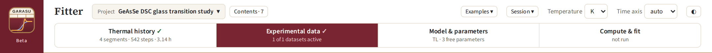
| Control | What it does |
|---|---|
| Tf Studio (logo) | Back to the home page or the launcher. |
| Temperature K / °C | Unit for every temperature on screen: plots, thermal-history inputs, Tg and its bounds, data limits. Values are stored in kelvin, so switching never changes a calculation. |
| Time axis auto / linear / log | Auto (default): real (linear) time whenever the temperature changes with time (ramps, MDSC), so scans are shown in real time; log time only for isothermal histories (jump + hold). Relaxation during holds and time-domain hold data stay on log time. Linear or log force one scale for every time axis. |
| ◐ | Switches between the light (default) and dark colour scheme. |
| SVG (on each plot) | Saves that plot as a vector graphic for slides or papers. |
| Hover on a plot | Shows the nearest data point and its values. |
Inputs accept any number format (1e5, 0.5, -40). Temperatures are read in the unit selected in the header.
Learn is a self-contained course on structural relaxation. The contents on the left jump to any section; Part I covers experiments and Part II the models.
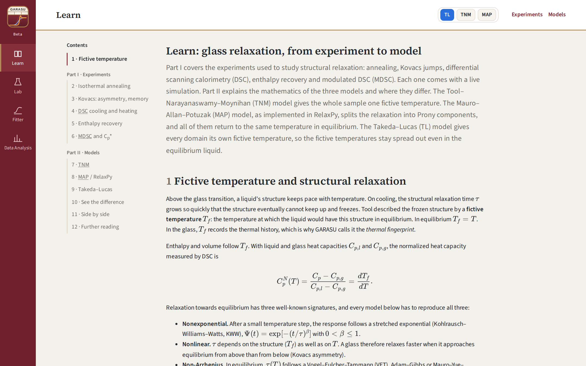
Each experiment has its protocol and equations, then a live simulation of the same example glass, selenium (Tg = 308.13 K, m = 64.14, with the TL parameters of Takeda & Lucas 2024; for MAP the glassy viscosity is Arrhenius with B = x m Tg, x = 0.5, and C = 0):
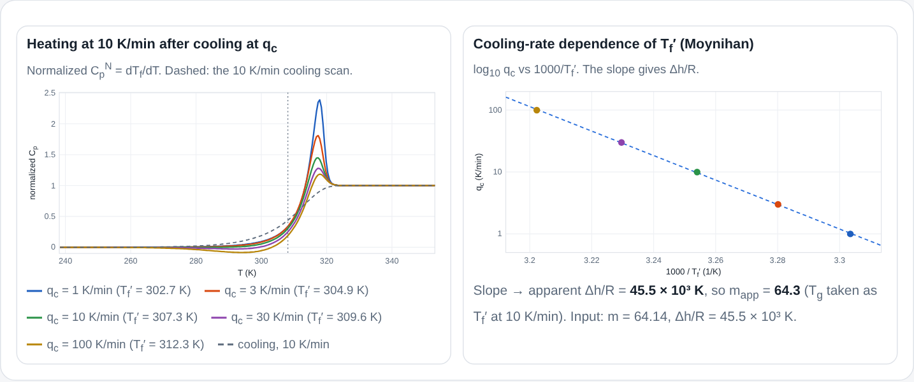
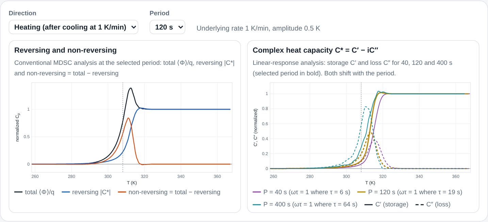
The mathematics of TNM, MAP and TL, what each assumes, and an interactive comparison of where the fictive temperatures sit.
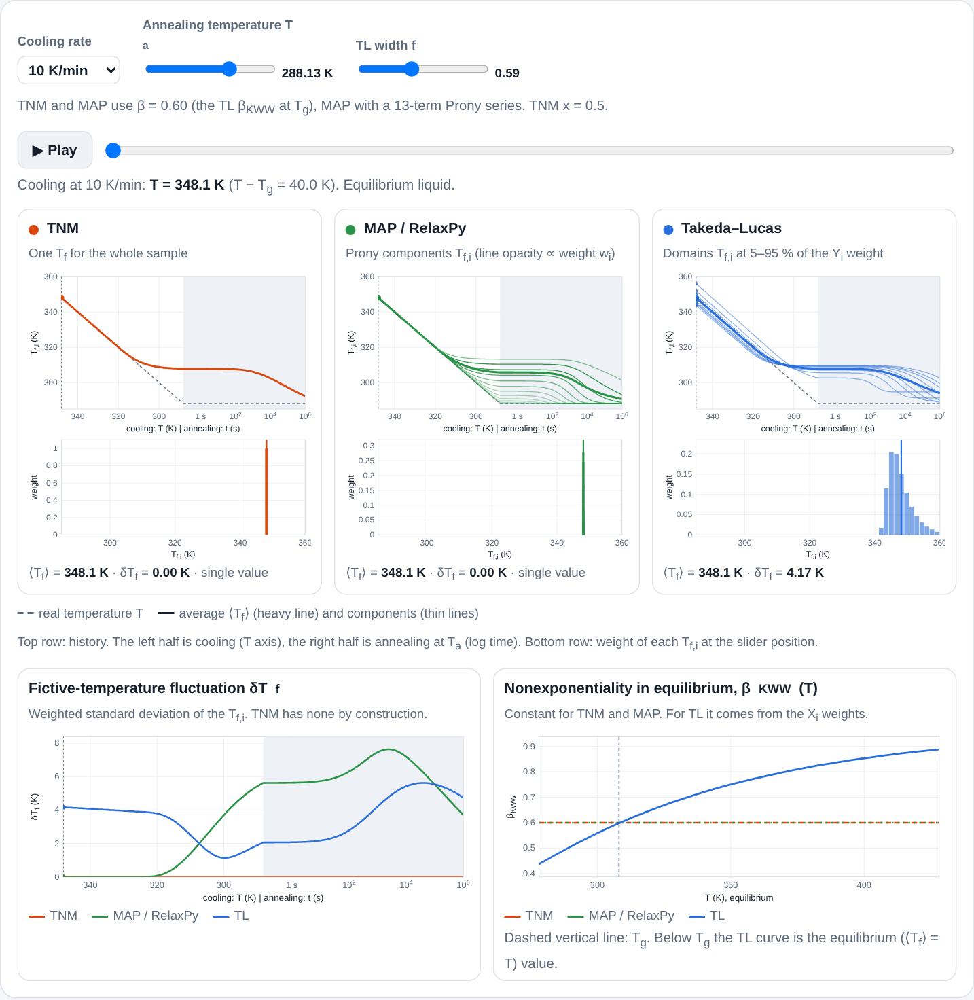
The Lab (formerly Explorer) is a quick, always-live playground: change a number and the plots update. Use it to build intuition; use the Fitter for your own histories and data.
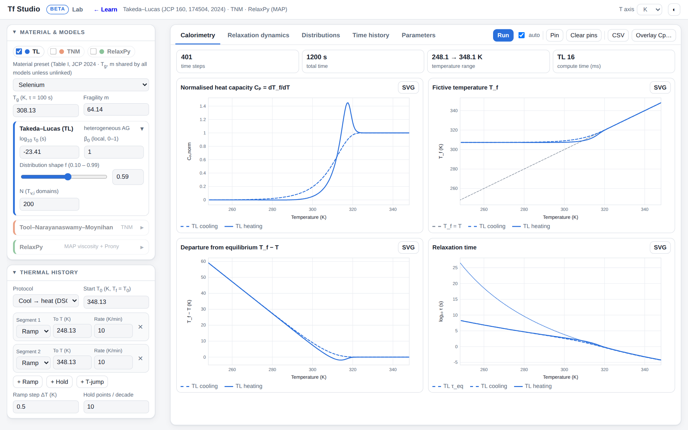
The Fitter works in four steps, shown as buttons across the top. You can move between them at any time.
| Step | What you do | Right panel shows |
|---|---|---|
| 1 Thermal history | Build the temperature program. | T(t) and the time steps |
| 2 Experimental data | Optional: add measurements. | your data and the linked segment |
| 3 Model & parameters | Choose a model, values, which parameters are free, and bounds. | history and data |
| 4 Compute & fit | Click Compute or Run fit. | all results |
Steps 1–3 only show the thermal history and your data. The model runs when you click Compute or Run fit in step 4. Any later change clears the old result and asks you to compute again, so a result on screen always matches the current settings.
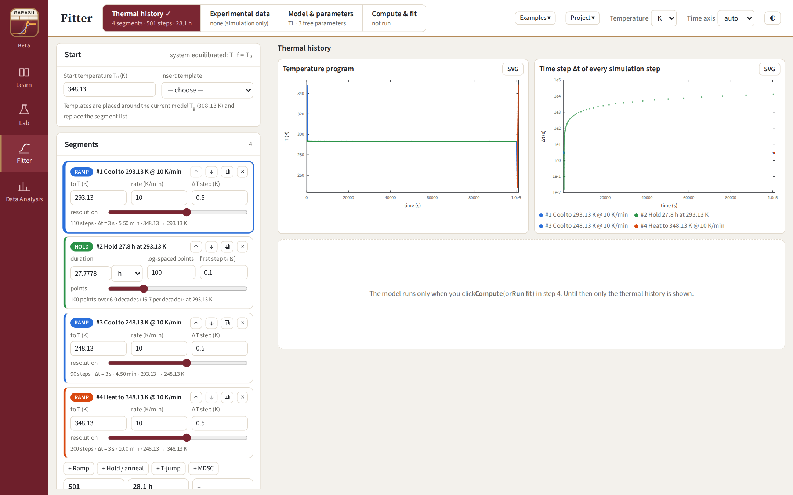
| Segment | Inputs | Notes |
|---|---|---|
| Ramp | target T, rate (K/min), ΔT step | 0.1–0.5 K steps are accurate for DSC; the slider sets ΔT on a log scale. |
| Hold / anneal | duration (s, min, h, d), log-spaced points, first step t₁ | Points are spaced logarithmically from t₁ to the duration. |
| T-jump | target T | Instantaneous change (e.g. Kovacs experiments). |
| MDSC | target T, underlying rate, amplitude ±A, period, points per period | Rate 0 gives quasi-isothermal MDSC with a duration. |
Under the segments, the summary shows the number of simulation steps and the total time. The right panel plots the temperature program and the time step of every simulation step.
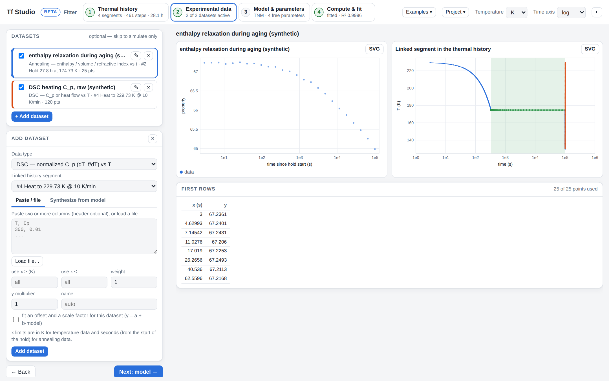
Types such as “Cp or heat flow vs T”, “Enthalpy vs T” and “property vs t” fit their baselines or linear coefficients exactly at every step, so you can load raw measurements. To normalize DSC data yourself first, use Data Analysis (section 7).
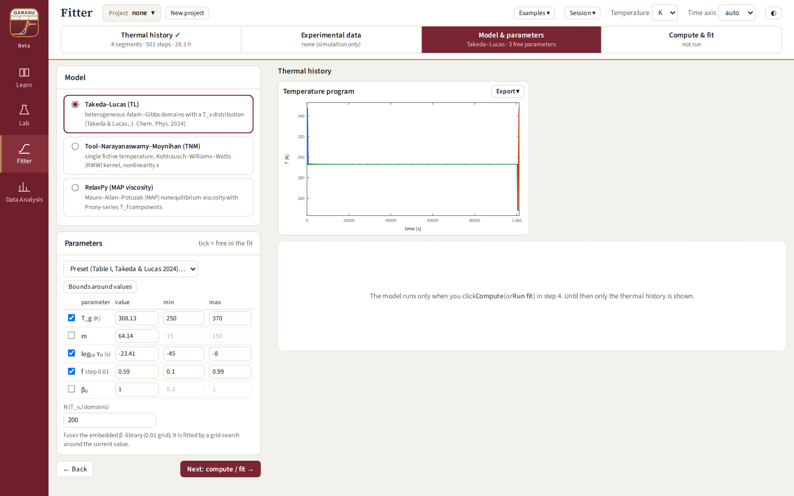
Forward calculation, no fitting. Check or adjust the values and click Compute. With data, the agreement (R², RMSE per dataset) is shown.
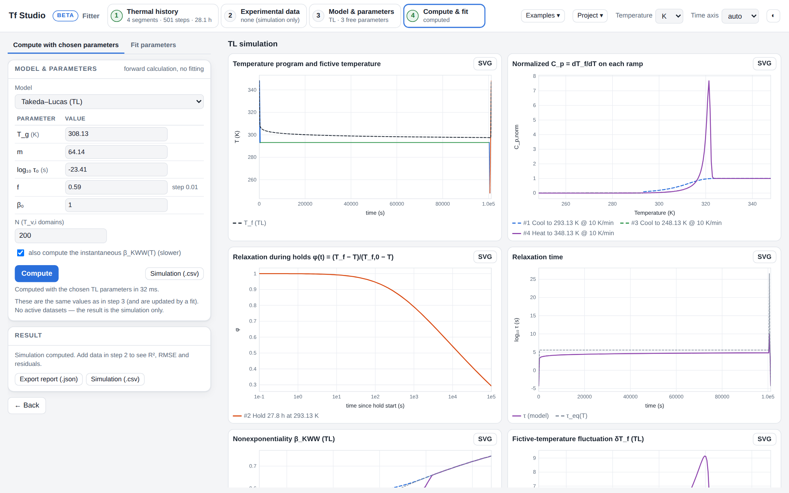
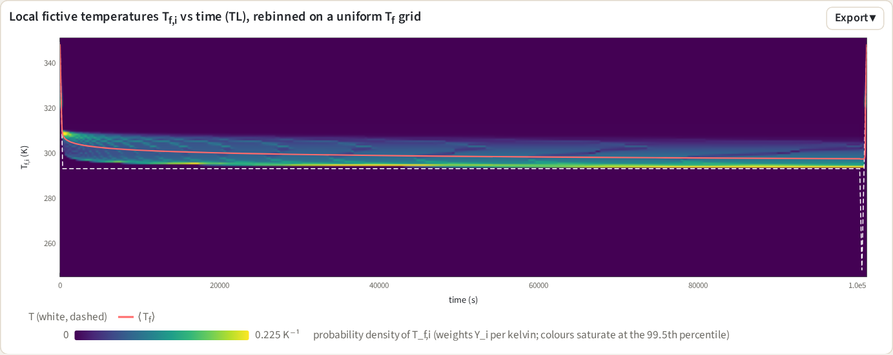
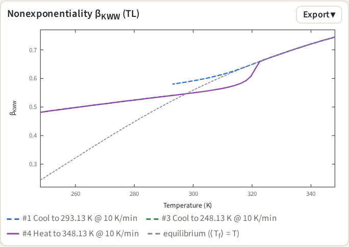
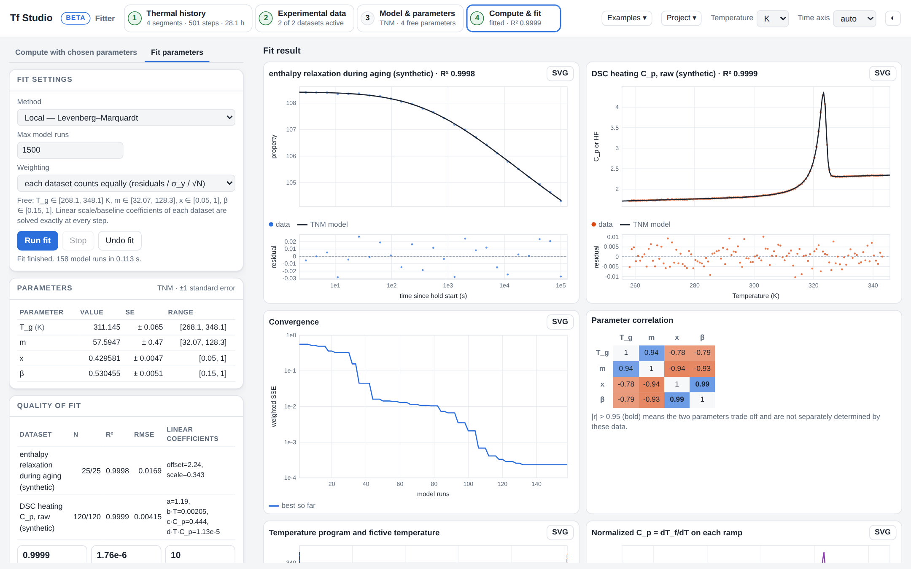
The result lists each parameter with ±1 standard error, flags parameters at bound or poorly determined, and gives R², reduced χ², AIC and BIC. In the correlation matrix, |r| > 0.95 (bold) means two parameters trade off and are not separately determined by your data.
Export report (.json) (parameters, errors, statistics, history), Model vs data (.csv), Simulation (.csv) (t, T, Tf, τ, τeq, segment), and the SVG button on each plot.
Project ▾: New project, Save project (.json) (history, data, model, values, bounds, fit options) and Open project…. Examples ▾ loads ready-made cases: a selenium DSC cycle, aging + DSC with synthetic enthalpy data, and MDSC with synthetic Cp′/Cp″.
Data Analysis prepares your own measurements. It has three tabs across the top. Each tab has Load example data (synthetic selenium data made with the TL model, parameters of Se from Takeda & Lucas 2024) so you can try everything first.
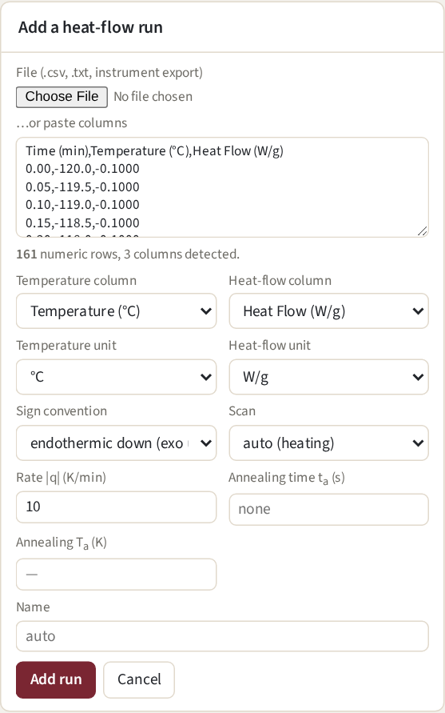
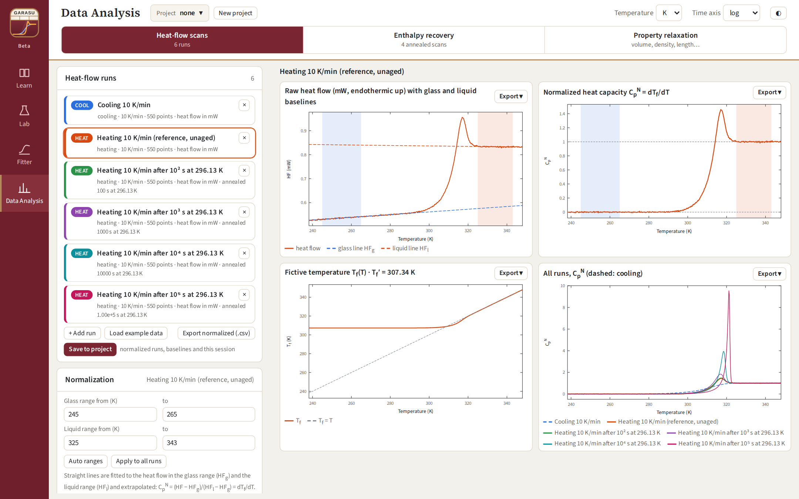
Normalization. Enter a glass range and a liquid range (or Auto ranges). A straight line is fitted to the heat flow in each range and extrapolated, giving
CpN = (HF − HFg) / (HFl − HFg) = dTf/dT, Tf(T) = T* − ∫TT* CpN dT′
with T* at the start of the liquid range (Moynihan's area matching). The card reports the limiting fictive temperature Tf′, the midpoint (CpN = 0.5) and ΔCp at Tf′. Apply to all runs copies the ranges; Export normalized (.csv) saves T, HF, CpN, Tf for every run.
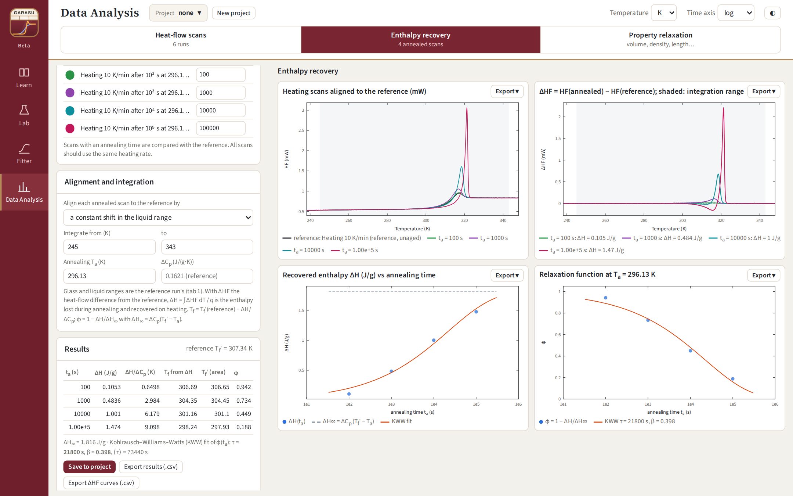
ΔH = (1/q) ∫ ΔHF dT, Tf = Tf′(ref) − ΔH/ΔCp, φ = 1 − ΔH/ΔH∞, ΔH∞ = ΔCp(Tf′ − Ta)
| Result column | Meaning |
|---|---|
| ΔH | enthalpy lost during annealing and recovered on heating (J/g with mW + mass or W/g; mJ with mW and no mass) |
| ΔH/ΔCp | the same in kelvin: the drop of the fictive temperature during annealing |
| Tf from ΔH / Tf′ (area) | fictive temperature after annealing, from ΔH and independently from area matching of the annealed scan (they should agree) |
| φ | relaxation function; with three or more annealing times a KWW fit gives τ, β and ⟨τ⟩ |
ΔH is computed with the reference's rate. All scans should be heated at the same rate and ideally measured on the same sample.
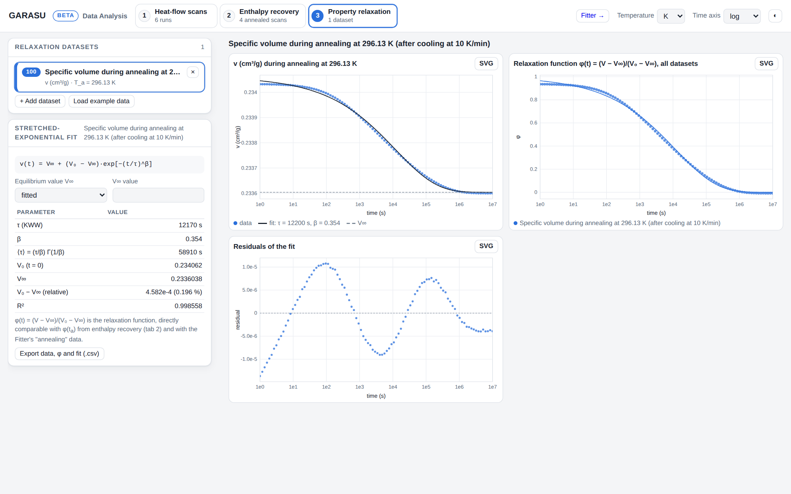
Add a dataset of a property against time during isothermal annealing: volume, density, length, refractive index… (+ Add dataset: pick the time column and unit, the property column, a label and Ta). The fit is
V(t) = V∞ + (V0 − V∞) exp[−(t/τ)β]
with V∞ fitted or fixed at a value you enter (use fixed when the data stop well before equilibrium). The table gives τ, β, ⟨τ⟩ = (τ/β)Γ(1/β), V0, V∞, the relative change and R². Several datasets can be compared on the φ(t) plot.
Systematic residuals (as in Figure 7.4) are expected for real glasses: relaxation is nonlinear, so a single stretched exponential is only an approximation. Fitting the model in the Fitter accounts for this.
Export the normalized curves (tab 1) or φ(t) (tabs 2, 3) as CSV and paste them into Fitter step 2 as “DSC — normalized Cp” or “Annealing — normalized relaxation φ(t)”, linked to the matching segment of a thermal history that reproduces your experiment.
0.25). Files with decimal commas must be converted first.| Example (DSC, TA style) | Example (annealing) |
|---|---|
Time (min),Temperature (°C),Heat Flow (W/g)0.00,-120.0,-0.10000.05,-119.5,-0.1001… | t (s) V (cm3/g)1 0.7957161.2 0.795715… |
| Problem | What to do |
|---|---|
| The Fitter shows no model curves. | Expected: the model runs only when you click Compute or Run fit in step 4. |
| A plot shows “Could not draw …”. | The rest of the page still works. Check the inputs of that part (e.g. a range with fewer than two points) and report it if it persists. |
| A hold shows no relaxation. | The hold is above Tg: the liquid equilibrates within milliseconds. Put the hold below Tg. |
| Mac: “cannot be opened / cannot verify the developer”. | System Settings → Privacy & Security → Open Anyway (once per computer). |
| Mac: “Restart now” does nothing, or the version does not change. | Download the latest DMG and replace the app (section 2.2). Versions before 1.1.6 cannot update themselves. |
| Windows: “Windows protected your PC”. | More info → Run anyway (first install only). |
| TL map or βKWW plot missing. | Very long histories (above ~60 000 steps with 200 domains) do not keep every Tf,i. Use a coarser ΔT step or fewer hold points. |
| A fitted parameter is “at bound”. | Widen its bounds in step 3, or fix it if the data cannot determine it. |
| Parameters strongly correlated (|r| > 0.95). | Add data that separate them (several cooling rates, annealing data) or fix one of them. |
| CpN is upside down. | Change the sign convention of the run (endothermic up/down). |
| ΔH has the wrong sign or size. | Check the sign convention, the rate and the sample mass, and that all scans used the same heating rate. |
Report problems or ideas at github.com/Wtakeda0129/tf-studio/issues or to the Lucas group.
| Model | Parameter | Meaning |
|---|---|---|
| TL | Tg | temperature where ⟨τ⟩ = 100 s |
| m | fragility index | |
| log10 τ0 | high-temperature limit of τ (s) | |
| f | width of the relaxation-time distribution (≈ βKWW at Tg), 0.10–0.99 | |
| β0 | intrinsic (local) stretching; 1 = fully heterogeneous | |
| N | number of domains (numerical; 200 is accurate) | |
| TNM | Tg | τ(Tg) = 100 s |
| m | fragility; Δh/R = m ln10 Tg | |
| x | nonlinearity (0–1) | |
| β | KWW stretching exponent | |
| MAP / RelaxPy | Tg | η(Tg) = 10¹² Pa·s |
| m | fragility (MYEGA) | |
| log10 η∞ | high-temperature viscosity limit | |
| A, B, C | nonequilibrium viscosity branch; A from continuity at Tg by default | |
| p | ergodicity exponent (default 0.3082·m) | |
| log10 Ks | modulus in τ = η/Ks | |
| β | stretching of the Prony series |
| Data type | Linked to | Notes |
|---|---|---|
| DSC — normalized Cp (dTf/dT) vs T | ramp | already normalized (e.g. from Data Analysis) |
| DSC — Cp or heat flow vs T | ramp | raw; glass/liquid baselines fitted |
| Enthalpy vs T | ramp, MDSC | H = a + bT + ΔCpTf fitted |
| Volume / density / length vs T | ramp, MDSC | dilatometry |
| Fictive temperature Tf vs T | ramp, MDSC | |
| Annealing — normalized φ(t) | hold | φ = (Tf − T)/(Tf,0 − T) |
| Annealing — Tf(t) | hold | |
| Annealing — enthalpy / volume / refractive index vs t | hold | a + b·Tf fitted |
| MDSC — Cp′ (reversing), Cp″ | MDSC | normalized; optional scale |
| Tf | fictive temperature: the temperature at which the liquid would have the current structure |
| Tf′ | limiting fictive temperature of the glass (frozen value after cooling) |
| CpN | normalized heat capacity, 0 in the glass and 1 in the liquid; equals dTf/dT |
| φ(t) | normalized relaxation function, 1 → 0 during annealing |
| KWW | stretched exponential exp[−(t/τ)β] |
| δTf | spread (standard deviation) of the local fictive temperatures in the TL model |
If Tf Studio contributes to your work, please cite:
and, when you use them, the TNM and MAP / RelaxPy papers:
Experiment references (Kovacs, Macedo–Napolitano, Hodge, Schawe, Hutchinson–Montserrat) are listed in Learn → Further reading.
Tf Studio · Lucas group, Department of Materials Science and Engineering, University of Arizona · github.com/Wtakeda0129/tf-studio